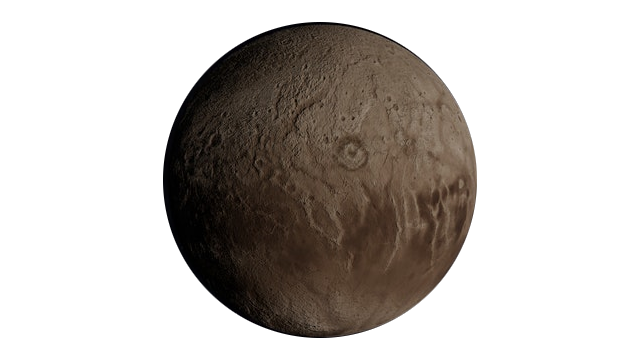

Descoberto em 1930, pelo astrônomo estadunidense Clyde Tombaugh, Plutão está localizado na região denominada Cinturão de Kuiper, que abriga milhões de corpos celestes gelados, com distâncias do Sol que variam entre 4,5 bilhões a 7,5 bilhões de quilômetros. Essa distância para o Sol faz com que Plutão registre temperaturas baixíssimas, girando em torno de 200° Celsius negativos.
Em 24 de agosto de 2006 a União Internacional da Astronomia (IAU) remove Plutão da lista de planetas pelo o fato dele não ser capaz de conduzir a sua própria órbita, ou seja, ele depende de outros corpos celestes para influenciar seu trajeto – neste caso, Netuno, de um lado; e diversos objetos congelados do Cinturão de Kuiper, do outro.
De acordo com a IAU, há três categorias principais de objetos no Sistema Solar: